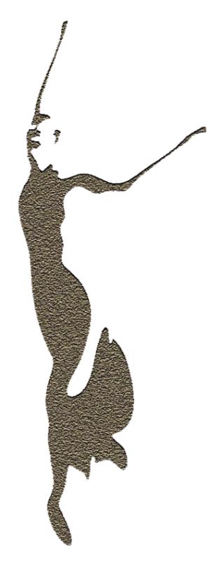
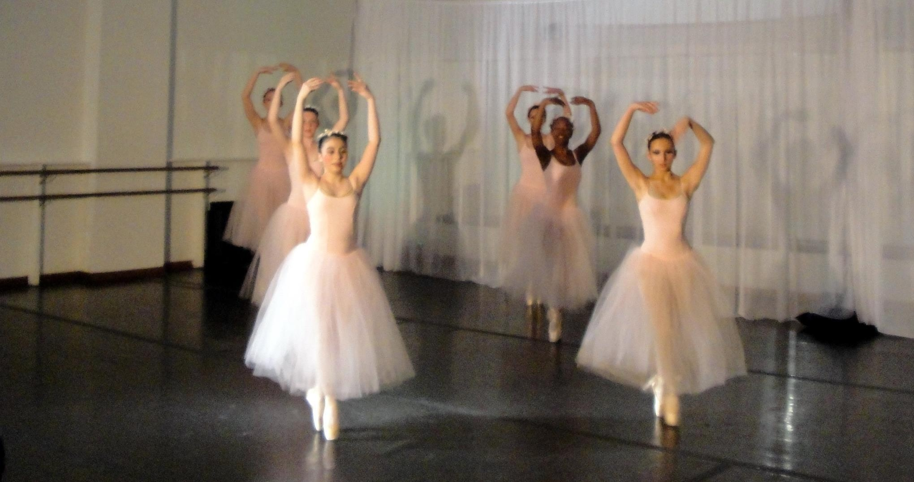
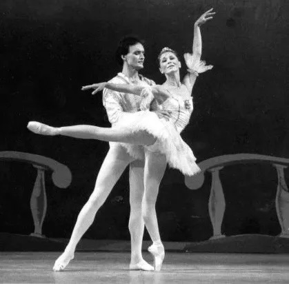

Founded in 2008, LI Ballet Academy & Dance offers a rare opportunity to study authentic Vaganova-based classical ballet training on Long Island.
Rooted in the finest traditions of Russian ballet, the school provides a structured, disciplined approach while remaining open and welcoming to students of all levels — from beginners to pre-professional dancers and adults.
Many students have trained with the academy from their first steps through graduation, going on to professional careers, prestigious college programs, and continued success in a wide range of fields.
The academy also offers an open adult ballet program that is unique in the area, providing a welcoming yet rigorous environment for dancers of all backgrounds. With flexible drop-in classes, the program supports both recreational students and professionals seeking to maintain and refine their training.

Irina Lebedeva received her professional training at the State Perm Ballet Academy and began her career with the Tchaikovsky Perm Opera and Ballet Theater, an institution with direct lineage to the Mariinsky (Kirov) Ballet of St. Petersburg.
She later performed as a principal dancer with the Leningrad Classical Ballet Company and the Moscow Festival Ballet, appearing in leading roles from the classical repertoire.
After relocating to the United States in 1990, Ms. Lebedeva continued performing with Eglevsky Ballet and other companies before transitioning into teaching.
She has since trained dancers across the country and continues to coach at a high professional level. Ms. Lebedeva is currently a Ballet Mistress with Connecticut Ballet and serves as Artistic Director of LI Ballet Academy & Dance.